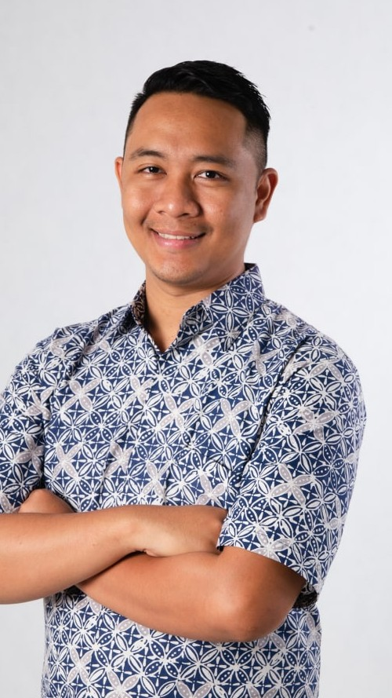

Kuala Lumpur Debate Orators Camp 2026 · Camp brief
Kuala Lumpur Debate Orators Camp 2026 · Camp brief
December holidays 2026 · TEDOH, Kuala Lumpur
Kuala Lumpur Debate
Orators Camp.
A three-day public speaking, critical thinking and debate camp for students aged 7 to 19. Small groups, hands-on from the first minute, in a safe space to speak up.
3 sessions18, 21 and 28 Dec 2026
3 days9am – 5pm daily
Ages 7–19Grouped by age, one session each
30 seatsPer session · taught in English
Why the Orators Camp
Speaking up is a skill, and skills can be practised. Around 2 in 10 people would do almost anything to avoid speaking in public. We start young, so speaking up feels normal long before it matters for exams, interviews and leadership.
Day 1Public speaking
Voice, posture and structure. Students plan short speeches, deliver them on the clock and get specific feedback.
Day 2Critical thinking
Building arguments, weighing evidence and spotting weak reasoning, including their own.
Day 3Debate
Taking a side, rebutting with respect and disagreeing well, in real practice debates with a motion and a timer.
How we teach
No long lectures. Every session is built around students standing up, speaking and trying again, in a friendly, non-competitive room. Students practise through simulations of real speaking situations and short, timed rounds of preparation and speeches, in breakout squads of 6–7, each with their own coach. KL Debate has prepared a curated syllabus designed to help every student become a better speaker, and each student receives KL Debate's complete workbook to support a long-term learning journey.
Led by

Luqman Long
Director, Kuala Lumpur Debate · Panel expert, National Education Plan 2026–2035

Amira Aisya
Coach, KL Debate · President, MUDA · Former Johor State Assemblywoman

Melanie Ting
English educator · Law graduate · Tutor, Superprof
Every seat includes
KL Debate workbookOrators Camp T-shirtCertificate of completionLunch and snacks, all three daysProfessional event photosA recording of each day's speechDaily badges and a graduation
Inside this pack
p. 1–4Schedule and learning outcomes
A day at camp, and the full programme for each session.
p. 5Fees, school package and FAQs
Early-bird fee, the International School Package and common questions.
Kuala Lumpur Debate Orators Camp 2026 · Fees and FAQs
Fees, school package and FAQs
Fees and questions.
Early bird
USD 280per student
For any one session. Book by 22 Nov 2026.
- Three full days, 9am – 5pm
- KL Debate workbook
- Orators Camp T-shirt
- Certificate of completion
- Lunch and snacks, all three days
- Professional event photos
Register and pay securely at bootcamp.kualalumpurdebate.com
International School Package
USD 250per student
When your school enrols students in groups of 5. Everything in the early-bird seat is included.
Per group of 5USD 1,250
VenueTEDOH, Kuala Lumpur
- Email us with your school, number of students and preferred session
- We confirm your places and send details for students and parents
- Your students take the floor for three days
Interested? Email kualalumpurdebate@gmail.com
Before you register
Will my child be a great speaker after three days?
Honestly, no one becomes a great speaker overnight. What we promise is effective techniques, real confidence and a positive place to start, so every student leaves with a strong foundation to keep building on.
Does my child need any experience?
No. The Orators Camp is open to every level, from first-time speakers to students who already debate at school.
How are students grouped by age?
Each session is for one age group: Little Heroes (7–10) on 18 – 20 Dec, Rising Voices (11–15) on 21 – 23 Dec and Young Champions (16–19) on 28 – 30 Dec. Within each session, students work in squads of 6–7 with their own coach.
Where exactly is the camp?
At TEDOH, B-1-2, Arena Mentari, Bandar Sunway.
What does my child bring home?
The daily workbook and a recording of the day's speech, every day. On Day 3, every camper graduates with a certificate.
What language is it taught in?
In English.
Register at bootcamp.kualalumpurdebate.com
Questions or school groups: kualalumpurdebate@gmail.com · @kldebate